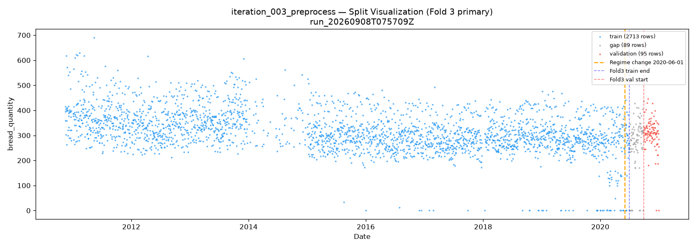
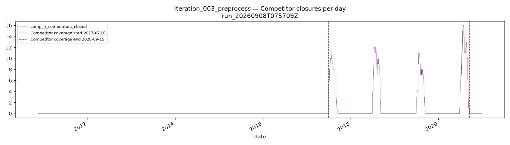
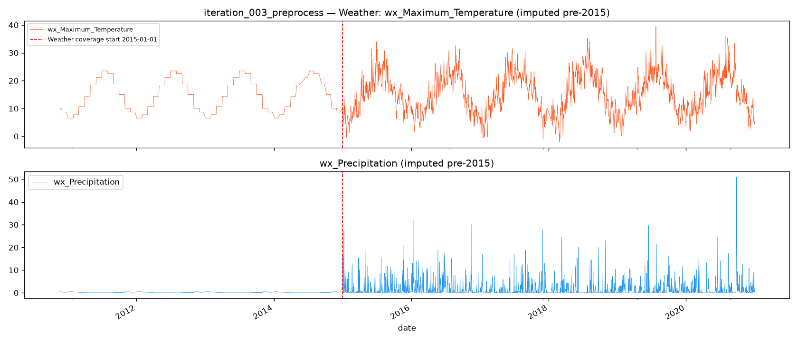

Initial preprocessing call: weather and competitor data joined to the sales series, 4 null-heavy weather columns dropped, and a 3-fold rolling-origin cross-validation split created. All 2,897 trading-day rows are retained. Every number in this report traces directly to the iteration_003_preprocess history JSON.
First Preprocess call this run. Starting from EDA's pre-parsed daily CSV (3,212 XMLs, 2,897 trading-day rows). Weather (hourly parquet → daily aggregates) and competitor holiday data joined per EDA join_plan. All transformations fit on fold-3 train rows only to prevent validation leakage.
| Fold | Train end | Val start | Val end | Train rows | Val rows | Val mean | Level gap | Post-regime in train |
|---|---|---|---|---|---|---|---|---|
| Fold 1 | 2018-06-30 | 2018-09-28 | 2018-12-30 | 2,082 | 81 | 293.5 | −10.7% | 0 |
| Fold 2 | 2019-06-30 | 2019-09-28 | 2019-12-31 | 2,395 | 81 | 269.4 | −17.0% | 0 |
| Fold 3 ★ | 2020-06-30 | 2020-09-28 | 2020-12-31 | 2,713 | 95 | 305.9 | −3.7% | 30 |
| h | Scoreable val rows | Note |
|---|---|---|
| 1 | 94 | |
| 7 | 88 | |
| 14 | 81 | |
| 30 | 65 | |
| 60 | 35 | |
| 90 | 5 | ⚠ Use all 3 folds for h=90 selection |
Fold 3 train cutoff (2020-06-30) falls exactly within the post-regime period, giving 30 post-regime training rows. This is the minimum viable signal to learn the Monday pattern added on 2020-06-01. Cutting at 2019-12-31 (clean boundary) would revert to 0 post-regime training — the same error as the prior run (+8.5 MAE on Mondays).
The parquet stores daily aggregates repeated per hourly row — mean (not sum) was used for Temperature and Precipitation. 1,015–1,016 pre-2015 rows had no weather coverage; these were imputed with month-of-year medians fit on fold-3 train only.
Dropped weather cols: Location (100% null), Address (metadata), Conditions (string), Wind_Chill (40.3% null), Heat_Index (94.9% null)
Each source row = one competitor on holiday for that date. Aggregated to n_competitors_closed, any_closed, closure_density. Dates outside coverage window filled with structural zero (absence of row = no holiday, not unknown). A comp_data_available binary flag separates "known zero" from "outside coverage window".
Deliverydata covers wholesale operations; no branch 01 retail tie-in confirmed. Consistent with EDA do_not_repeat entry and prior runs.
| Column | Category | Reason |
|---|---|---|
| wx_Wind_Chill | HIGH NULL | 40.3% null in raw hourly parquet; derived feel-like index that adds nothing over Temperature for demand modeling |
| wx_Heat_Index | HIGH NULL | 94.9% null in raw hourly parquet; effectively unusable |
| wx_Location / wx_Address | 100% NULL | 100% null metadata columns in the parquet file |
| wx_Conditions | REDUNDANT | String category; redundant with numeric Precipitation for demand modeling; would require encoding overhead |
Missingness is entirely explained by date < 2015-01-01 (weather coverage gap). Month-of-year median preserves Belgium's strong annual temperature seasonality (summer warm, winter cold) that a global median would flatten. Fit on fold-3 train rows only to prevent validation leakage. Confidence: 0.85.
Same MAR mechanism as temperature (date < 2015 gap). Visual Crossing API repeats the daily total in every hourly row — aggregation uses mean across 24 rows (not sum). Month-of-year median imputation applied. Note: post-imputation mean (1.246 mm/day) is ~2× lower than prior run's value (2.68 mm/day); may reflect that month medians underrepresent actual pre-2015 precipitation. Non-blocking — see clarification slide.
VerlofConcurrent.csv records events (competitor holidays). A missing row means no competitor was on holiday — structural zero, not unknown. Dates outside the 2017-07-01 to 2020-09-15 coverage window also get 0. The comp_data_available indicator (1 within coverage window) separates known zeros from out-of-coverage zeros. Confidence: 0.95.
Post-transform stats: mean=0.999, std=0.026, skew=−38.04. 99.9% of days had_reduction=1. This column has effectively zero variance — it carries no signal for a tree-based or linear model. Feature Engineering should drop this column before training.



The split visualization confirms fold 3's unique property: the only fold with post-regime data in training (30 rows, June 2020). This is critical — prior run had 0 post-regime training rows, causing a systematic +8.5 MAE error on Mondays. The weather coverage plot confirms the 1,015-row gap (pre-2015) is fully covered by month-of-year median imputation, with no residual nulls.
Post-imputation Precipitation mean is ~2× lower than prior run's value. Possible cause: month-of-year medians may underrepresent actual pre-2015 precipitation (right-skewed distribution).
Recommended answer: Proceed with current imputation. Investigate in Feature Engineering by inspecting 2015–2020 precipitation mean separately (without imputed rows). If wrong: moderate impact — weather feature importance for pre-2015 period may be underestimated.
| Feature | Mean | Std | Skew | Nulls |
|---|---|---|---|---|
| bread_quantity | 315.9 | 84.1 | −0.39 | 0 |
| wx_Maximum_Temperature | 15.1°C | 6.6 | 0.19 | 0 ✓ imputed |
| wx_Precipitation | 1.25 mm | 3.18 | 5.14 | 0 ✓ imputed |
| wx_Snow_depth | 0.02 | 0.23 | 16.2 | 0 |
| comp_n_competitors_closed | 0.73 | 2.55 | 3.63 | 0 ✓ zero-fill |
| had_reduction | 0.999 | 0.026 | −38.0 | ⚠ NEAR-CONSTANT |
The processed dataset is the input for all subsequent Feature Engineering and Training calls in this run. The _split column (values: train/gap/validation) and fold columns (_fold_1, _fold_2, _fold_3) are fixed for the run — changing the split mid-run would invalidate all metric comparisons.